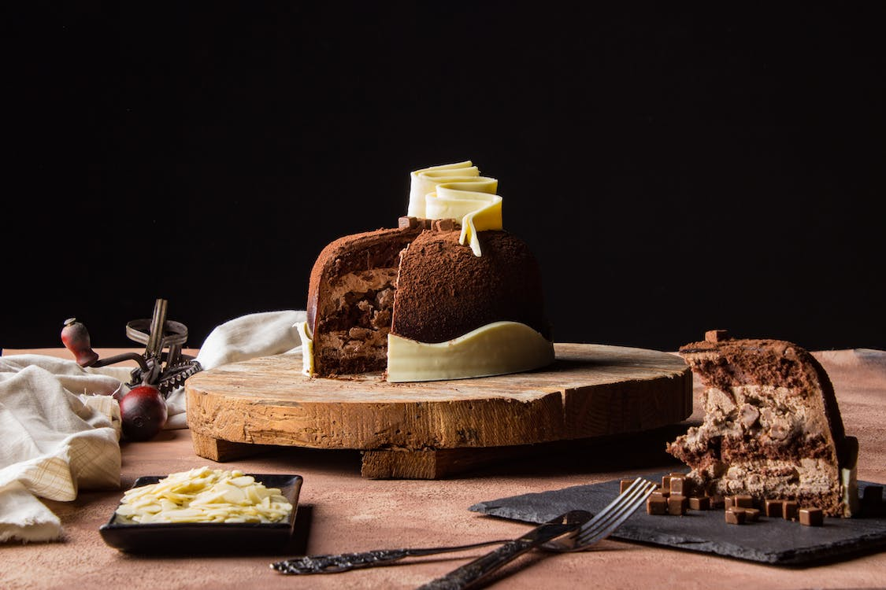

<div>
    <app-search (searchText)="onSearchText($event)"></app-search>
</div>
<div>
    <mat-chip-listbox #chips class="chip" (change)="search(chips.value)">
        <mat-chip-option color="warn" selected value="all">All</mat-chip-option>
        <mat-chip-option color="primary" value="cake">Cakes</mat-chip-option>
        <mat-chip-option color="warn" value="brownies">Brownies</mat-chip-option>
        <mat-chip-option color="accent" value="cookies">Cookies</mat-chip-option>
    </mat-chip-listbox>
</div>
<div id="carouselExampleAutoplaying" class="carousel slide" data-bs-ride="carousel">
    <div class="carousel-inner">
        <div class="carousel-item active">
            
        </div>
        <div class="carousel-item">
            
        </div>
        <div class="carousel-item">
            
        </div>
    </div>
    <button class="carousel-control-prev" type="button" data-bs-target="#carouselExampleAutoplaying"
        data-bs-slide="prev">
        <span class="carousel-control-prev-icon" aria-hidden="true"></span>
        <span class="visually-hidden">Previous</span>
    </button>
    <button class="carousel-control-next" type="button" data-bs-target="#carouselExampleAutoplaying"
        data-bs-slide="next">
        <span class="carousel-control-next-icon" aria-hidden="true"></span>
        <span class="visually-hidden">Next</span>
    </button>
</div>

<app-cake-card *ngFor="let item of product" [product]="item"></app-cake-card>
